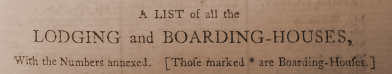

Lodging and Boarding Houses 1773-1807
An interactive map of the lodging and boarding houses listed in numerous editions of The New Bath Guide that demonstrates the changing nature of the hospitality business in the pre-eminent British resort of the period.
Eighteenth-Century Bath Newspapers' Distribution Networks
An interactive map of the various distribution networks used by the Bath newspapers that shows the reach of the titles not only within the surrounding region, but also much further afield.